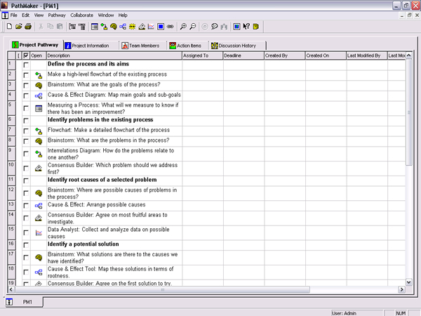

Joel Barker called TQM, or Total Quality Management, the most important paradigm shift of the latter part of the 20th century. He was probably overstating the case, but there's no question that it was a big change. Toyota saw a 50-fold productivity increase in about 30 years, applying TQM methods. It doesn't really matter if it ends up being called TQM or Six Sigma or Continuous Improvement or something else. The fundamentals are going to be with us for a long time to come, because they work.

PathMaker has tools for all the steps of process improvement, and comes with a template for process improvement work. There are a multitude of methodologies floating around for process improvement, but they have a common heritage. You can modify the standard template in PathMaker to suit the method that works best for you. With PathMaker supporting them, your TQM project teams will make more improvements faster, and the results will drop straight to your bottom line.
Around 1500, Francis Bacon described the scientific method, with the development of a hypothesis, the design of experiments to test it, and the subsequent rethinking of the original thesis. The famous cycle, of Plan, Do, Check, Act, outlined by Walter Shewhart and popularized by Dr. Deming, is pretty much a reiteration of the basic scientific method.
You start by looking at your organization as a big process, comprised of sub-processes, all of which should align with the overarching goals of the organization. All processes can be improved, but the Pareto effect holds here, as in so many places. A few of your processes will be creating most of the poor quality, or wasted effort, in the organization.
One way to identify the most troubling processes is to ask people what constrains them from doing their best work. Or what constrains the organization from turning in better performance. Usually, the answers will point to some key bottlenecks or malfunctioning processes.
Once you have chosen a process to tackle, you will need examine what it is supposed to do, what actually happens now, and what sort of results are being achieved. Process analysis forms, cause and effect diagrams, and flowcharts are good tools for this sort of work.
You can then compare the actual to the ideal, and start thinking of ways to improve it. Here you might want to brainstorm a bunch of ideas for improvements, quickly group them with an affinity diagram, and them discuss them in more detail with the consensus builder tool.
Pick a solution or solutions which seem most promising, and try them. Pilot tests are often the best way to do this. Collect data, starting before the pilot test starts, and continuing until the results can be viewed with some confidence. If the solution you tried doesn't work, perhaps it needs to be redesigned, or abandoned, or tried in concert with another solution.
The reiteration of design, experiment, evaluation, redesign goes on until the process being improved is no longer the chief constraint of the organization. Then another key process comes under the microscope, and bit by bit, the organization improves itself.